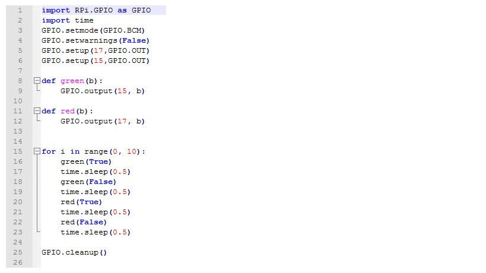

Hi Everyone! I have been playing with python, and I was able to make this awesome program to turn LED's on and off on my raspberry pi 2. If you don't know much about Raspberry pi, it is a very small computer that is just as powerful as a desktop, and the current one is 3. You will see it in a clear box in the back of the video. I used wires, a bread board, resistors, and the GPIO on the pi to make this work. I built 2 functions, one for each light, green and red. You can see in the code below how I imported different modules and in the video how I set it up so each channel corresponded to different channel on the bread board. I made sure each channel went through a resistor so I did not put too much power through it. I also made sure to ground it, which is an important step. When I tried to repeat this experiment later I ran into a problem because the GPIO were already assigned, so I had to use GPIO.cleanup() to reset the channels at the end.

My First Website
Hi Everyone! Welcome to my first website. I was able to take an intro to html/css class, and I took what I learned to build this website. For those of you also new to programming, it is what all websites are coded with. Although some wrap it up a bow for you to just drag and drop everything into place, but I don't always like the way they work.
When making an html you will need a text editor, such as sublime, which will allow you to save the file as index.html, and a style sheet saves as style.css. The end .html and .css is the most important part, because it tells the computer the type of file it is reading. HTML stands for Hyper-Text Mark-up Language, and CSS stands for Cascading Style ¬Sheet. The more important one to remember is what css stands for, because it is how the computer reads and changes your website. The computer reads the sheet top to bottom, applying each change as it goes. There are many different ways to use css to select and adjust each piece, and a great way to learn is through a Css Game..
There are many great resources for learning the basic setup, and it is one of the simplest languages to learn. I have found it is a great place to start programming, and you can search online for just about any error message or problem. Another great way to learn is to take classes, but I understand you may not want to commit to a full boot camp, so sites like meetup.com will help you to find groups that offer 1 or 2 day classes. There are also some amazing sites that offer free classes online such as freecodecamp.com and codeacademy.com. Good luck and be sure to check back for more projects!